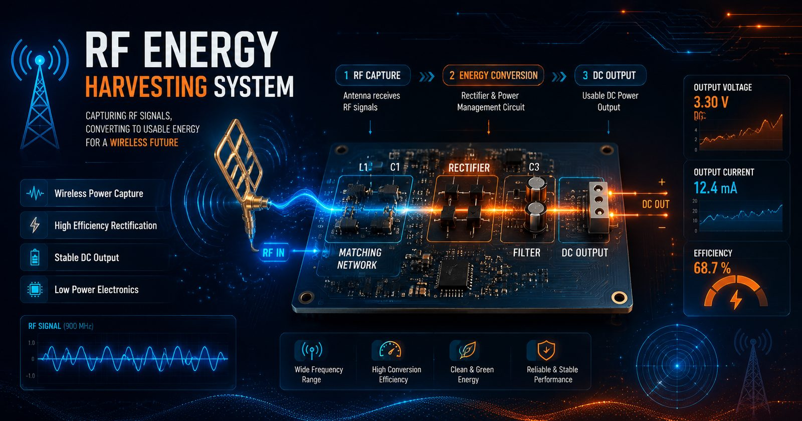

Project documentation — Index 33
RF Energy Harvesting
A multistage RF-to-DC converter that scavenges ambient radio-frequency energy — from cell towers, Wi-Fi routers, broadcast antennas — into usable DC power.

Project documentation — Index 33
A multistage RF-to-DC converter that scavenges ambient radio-frequency energy — from cell towers, Wi-Fi routers, broadcast antennas — into usable DC power.

Ambient RF is everywhere and mostly wasted. This project explores harvesting it: a multistage converter circuit that rectifies ambient radio-frequency signals into DC, with enough stages and gain to produce a measurable, usable output.
Single-stage rectifiers can't do much with the micro-watt signals found in ordinary rooms. The design has to stack voltage multiplication and match impedances carefully, or the harvested power never makes it past the first stage.
RF-to-DC conversion across multiple cascaded stages.
Matching network for maximum power transfer from antenna to circuit.
Stages that boost the output voltage into a usable range.
Capacitor bank to accumulate the harvested charge.
Designed and tested a working multistage RF-to-DC converter. The circuit was measured and tuned iteratively — stage count, matching, and storage — to improve conversion efficiency from ambient signals. A hardware project that teaches patience: every component value is a compromise.